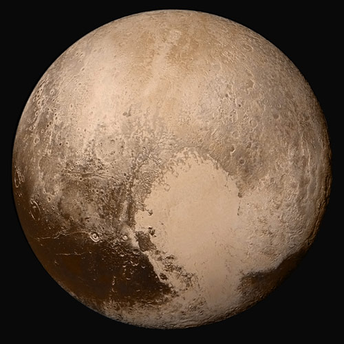
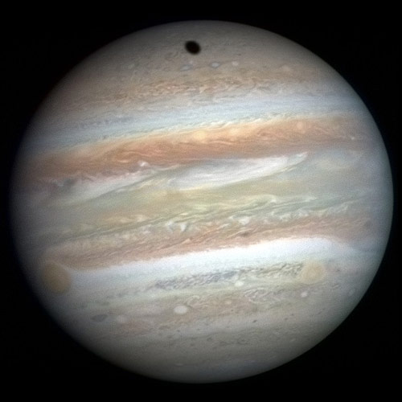

Probe distances Distances of farthest probes from Earth. Voyageur 119.86 B km Voyageur 216.41 B km New Horizons4.8 B km Cassini1.43 B km 0 10
Probe details Probe details including launch date & destination. Probe Launch date Destination Juno Aug. 5, 2011 Jupiter Rosetta Mar. 2, 2004 Comet 67P/Churyumov-Gerasimenko Okras May 20, 2010 Venus Shin’en 2 Dec. 3, 2014 Heliocentric orbit Gaia Dec. 19, 2013 Sun-Earth L2 point
Probe destination Pluto 67P/C-G Jupiter  Name Pluto Discovery year 1930 Discovered by Clyde W. Tombaugh Name 67P/C-G Discovery year 1969 Discovered by Klim Ivanovych Churyumov, Svetlana Ivanovna Gerasimenko  Name Jupiter Discovery year 7–8 BCE Discovered by Babylonian astronomers